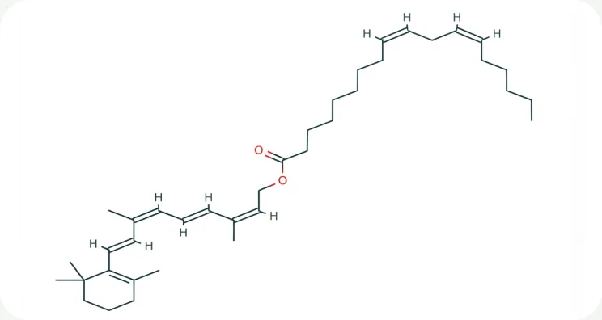
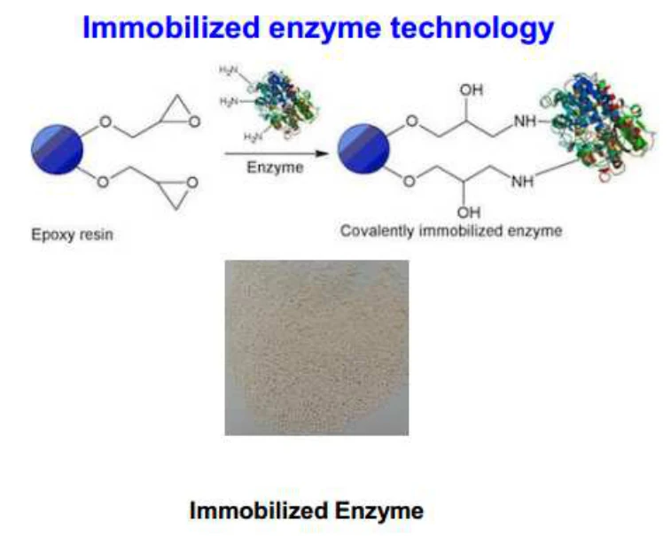
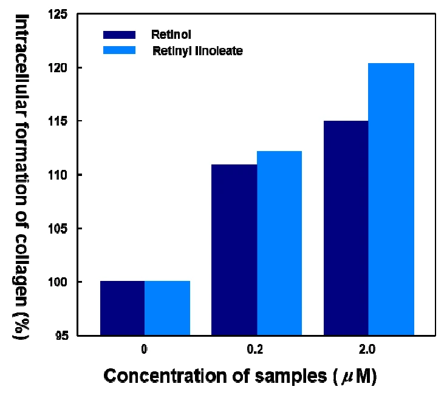
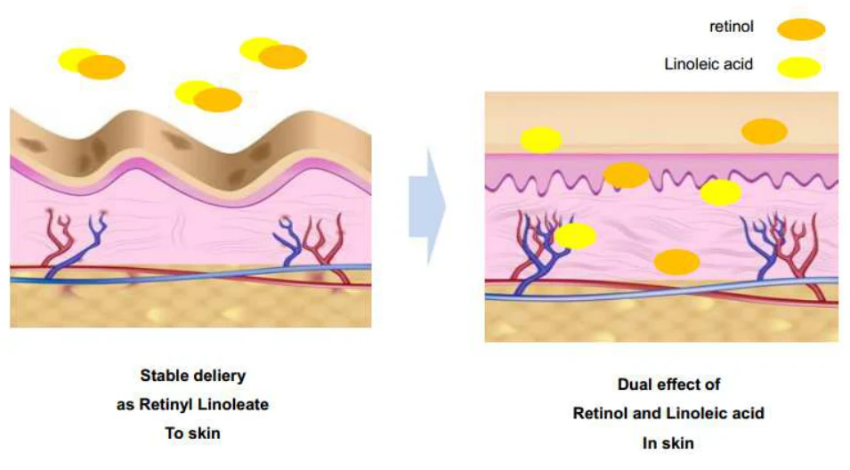

HOME
HOME- 원료소개
- 화장품원료
- MC-RetiF
Ingredient research
MC-RetiF
안정화된 레티놀 유도체
01 / Overview & Strengths
개요 & 특장점
안정화된 레티놀 유도체입니다. 바이오기술을 적용한 제품으로서 Retinol(Vitamin A)과 Linoleate산의 두가지 기능을 보유한 제품입니다.
※ 자세한 자료는 직접 문의 부탁드립니다.
Product features / Product Strengths
- 주름개선 효과
- 미백 효과
- 여드름개선 효과

02 / Technical Information
기술 자료
Product Name : MC-RetiF
원료 기본 규격 및 제품 카탈로그
- INCI Name
- Retinyl Linoleate
- CAS No.
- 631-89-0
- M.O.Q.
- 1KG
- Pack Size
- 1KG
- Appearance
- Liquid
- Dosage
- Min. 0.05%
※ 운영 사이트의 공개 정보를 반영했습니다. 자세한 자료는 직접 문의 부탁드립니다.
03 / Research Data
기타 데이터
- 피부 세포 활동 조절
비타민 A는 피부 세포의 정상적인 활동을 조절하는, 피부에 가장 뛰어난 비타민입니다.
- 세포핵 DNA 활동 조절
비타민 A는 세포핵의 정상적인 DNA 활동을 조절하는 가장 중요한 요소입니다.
- 비타민 A · F 결합
RETINO-F(Retinyl linoleate)는 비타민 A와 비타민 F(리놀레산)를 결합한 원료입니다.

Immobilized Enzyme Technology
고정화 효소 기술
에폭시 수지(Epoxy resin)에 효소를 공유 결합시킨 고정화 효소(Immobilized Enzyme) 기술을 적용했습니다.

시료 농도(0 · 0.2 · 2.0 µM)별 세포 내 콜라겐 생성률 : Retinol 대비 Retinyl linoleate

Advantage : Dual Effect
레티놀 · 리놀레산 이중 효과
Retinyl Linoleate 형태로 피부에 안정적으로 전달된 뒤, 피부 속에서 레티놀과 리놀레산의 이중 효과를 냅니다.
원료 품질 시험 항목 및 기준
- Appearance
- Yellow to yellowish brown viscous liquid
- Content
- Min. 50%
- Residue on ignition
- Max. 0.5%
- Heavy Metals
- Max. 20ppm
- Arsenic
- Max. 2ppm
- Microbial count
- Max. 102 cfu/g
※ 출처: MacroCare Onepage Catalogue · RETINO-F. 그래프 · 사진은 원문 자료를 사용했습니다. 상세 시험 조건은 별도 문의해 주세요.